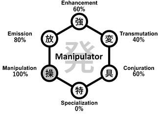
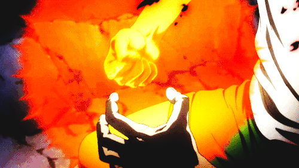
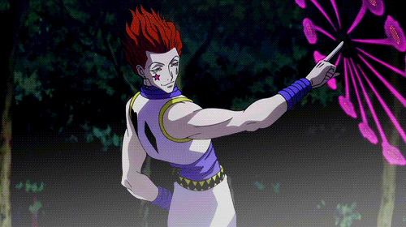
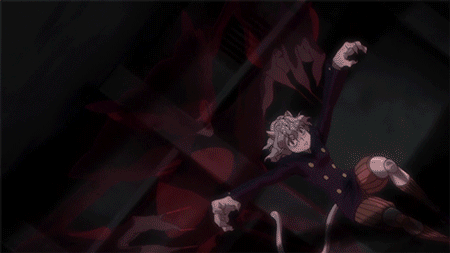

No universo do anime Hunter x Hunter, "Nen" (念 Força Mental) é uma técnica que permite um ser vivo usar e manipular seu próprio fluxo de energia vital (conhecida como aura). O termo "Nen" também pode ser usado para se referir à aura. Com o Nen é possível adquirir uma variedade de poderes e peculiaridades, o que faz com que isso se torne perigoso e seja mantido como um segredo e longe das pessoas, a fim de manter equilíbrio na sociedade.
Existem 6 tipos de aura: todos os indivíduos nascem com algum desses 6 tipos de aura. Após aprender qual tipo de aura pertence, o indivíduo pode criar uma habilidade única, e a que mais se enquadre em sua personalidade.
Intensificação é a habilidade aonde o indivíduo utiliza sua aura para potencializar poderes naturais, seja de um objeto, ou mesmo de seu próprio corpo. Intensificadores são capazes de aumentar o poder de seus ataques físicos e de sua defesa, e possuem melhor vantagem em combate corpo-corpo.
Transformação é a habilidade do indivíduo em transformar as propriedades de sua aura para que ela imite as propriedades de alguma outra coisa, como elementos naturais ou não naturais (ex. Eletricidade, Fogo, Borracha).
Materialização é a capacidade do indivíduo criar um objeto através de sua aura. Quando a pessoa dominar a invocação do objeto de seu desejo, ele pode fazê-lo aparecer e desaparecer em um instante. Objetos criados através dessa técnica podem possuir certa "independência" para serem criados.

Emissão é a capacidade do indivíduo controlar uma certa quantidade de aura, e ter capacidade de separá-la de seu corpo, arremeçando-a.

Manipulação é a capacidade de controlar algo, sejam elas coisas vivas ou não. (ex. Fumaça, Papel, Seres Humanos).
Especialização é a técnica que não se enquadra em nenhuma das outras categorias. É a categoria mais vaga. Pode ser literalmente qualquer tipo de habilidade paranormal inusitada.
